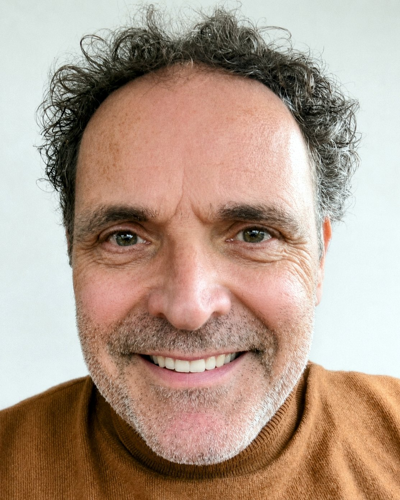

Marcel Bisschops | Partner MaeS & Partners | M&A en strategisch advies
Ervaring die telt wanneer het ingewikkeld wordt.
Ruim dertig jaar ben ik actief op het snijvlak van strategie, bestuur, ondernemerschap en fusies en overnames. Mijn ervaring als bestuurder, COO, toezichthouder en corporate finance-adviseur vormt de basis voor mijn huidige werkzaamheden.
Sinds november 2026 ben ik als partner verbonden aan MaeS & Partners, een onafhankelijk advieskantoor gespecialiseerd in fusies, aan- en verkoop van accountants-, administratie- en belastingadvieskantoren.
Partner bij MaeS & Partners.
Binnen MaeS & Partners richt ik mij op de integrale begeleiding van overnametrajecten, zowel aan koop- als verkoopzijde. Van strategische oriëntatie, ondernemingswaardering en het vinden van passende partijen tot onderhandelingen, due diligence en closing.
Mijn achtergrond als bestuurder binnen de accountancysector stelt mij in staat verder te kijken dan de financiële aspecten van een transactie. Ik begrijp het verdienmodel, de organisatorische dynamiek, de belangen van partners en medewerkers en de uitdagingen rondom groei, opvolging en continuïteit.
Een succesvolle transactie draait voor mij niet uitsluitend om prijs en voorwaarden, maar vooral om de juiste strategische en menselijke match.
Wat de rollen in mijn loopbaan gemeen hadden: het waren situaties waarin het overzicht zoek was, de belangen uiteenliepen en er knopen moesten worden doorgehakt. Mijn werk is dan steeds hetzelfde: het vraagstuk terugbrengen tot de essentie, de keuzes scherp maken en betrokken blijven tot de gekozen koers ook echt werkt.
Ondernemerschap en innovatie.
Naast mijn werkzaamheden bij MaeS & Partners ben ik initiatiefnemer en ontwikkelaar van Koers voor Morgen, een zelfstandig AI-ondersteund M&A-platform.
Het platform brengt financiële analyse, matching, documentatie, due diligence en procesregie samen in één digitale omgeving. Daarmee combineer ik jarenlange praktijkervaring met technologische innovatie.
Mijn overtuiging is dat technologie het werk van de adviseur moet versterken, niet vervangen. Minder administratie, meer inzicht en meer ruimte voor persoonlijk advies en professioneel oordeel.
Hoe ik werk
Eén aanspreekpunt. Geen team dat u zelf moet aansturen.
Ik begin bij de vraag achter de vraag. Wat moet hier echt worden opgelost, los van de symptomen en de ruis? Vandaaruit maak ik de keuzes expliciet: wat zijn de opties, wat kosten ze, en wat betekent elke keuze voor de organisatie erna.
Zodra de richting vaststaat, pak ik de regie: geen dik plan, wel overzicht, prioriteiten en een ritme waarin voortgang zichtbaar blijft. En ik blijf betrokken tot het werkt in processen, systemen en gedrag, niet alleen op papier.
Ik breng organisaties onder druk terug naar rust, regie en resultaat.
Marcel Bisschops
Kernervaring
Vier lijnen die samenkomen.
M&A
Meer dan twintig fusies en overnames aan koop- en verkoopzijde, van strategische rationale en onderhandeling tot due diligence, closing en post-merger integratie. Corporate finance adviseur bij Fidelis Bedrijfsadvies; als COO van Accon AVM (Flynth, ~1.000 FTE) regie op de volledige M&A-cyclus.
Bestuur & toezicht
Voorzitter Raad van Bestuur / statutair bestuurder van Netsam Participaties (investeringsholding, € 40 mln beheerd kapitaal, ~175 FTE). Statutair bestuurder 216 Accountants (~100 FTE). Als CEO van 216 het gezicht van de transformatie naar een modern, klantgericht en vergaand geautomatiseerd accountantskantoor. Toezichthouder en lid Raad van Advies bij Finturi, fintech onder AFM-toezicht.
Transformatie & herstel
Herstel van bestuurbaarheid, governance en financiële voorspelbaarheid bij organisaties onder druk; interim-bestuurder bij onder meer Ledger Leopard. Bestuurlijke continuïteit geborgd na ingrijpende overnames en herstructureringen.
Advies
Senior Manager KPMG Advisory (risk & control, internationaal).
Drs. Bestuurskunde (Rijksuniversiteit Leiden). Nederlands, Engels, Duits. Werkgebied: heel Nederland.
Loopbaan
De lijn tot nu.
- KPMG Advisory · Senior Manager risk & control, internationaal (2003–2009)
- Accon AVM (Flynth) · COO, ~1.000 FTE (2009–2013)
- Fidelis Bedrijfsadvies · Corporate Finance Adviseur (2013–2015)
- 216 Accountants · Statutair Bestuurder, ~100 FTE (2016–2018)
- Finturi · Toezichthouder / lid RvA, fintech onder AFM-toezicht (2018–2023)
- Ledger Leopard · Bestuurder a.i. (2019)
- Netsam Participaties · Voorzitter RvB / Statutair Bestuurder, € 40 mln beheerd kapitaal, ~175 FTE (2019–2025)
- Bisschops Interim Management / Koers voor Morgen · zelfstandig interim bestuurder en M&A-adviseur; ontwikkelde het AI-M&A-platform (2025–heden)
- MaeS & Partners · Partner, fusies, aan- en verkoop van accountants-, administratie- en belastingadvieskantoren (november 2026–heden)
Sectoren
Waar ik thuis ben.
Accountancy & advies · fintech (AFM-gereguleerd) · technologie · IT & consultancy · investeringen & participaties.
Ondernemerschap
Ik bouwde ook het platform.
Naast de adviespraktijk ontwikkelde ik Koers voor Morgen als zelfstandig M&A-platform. Bewijs van hoe diep de dealpraktijk in mijn werk zit, en een product dat op eigen benen staat.